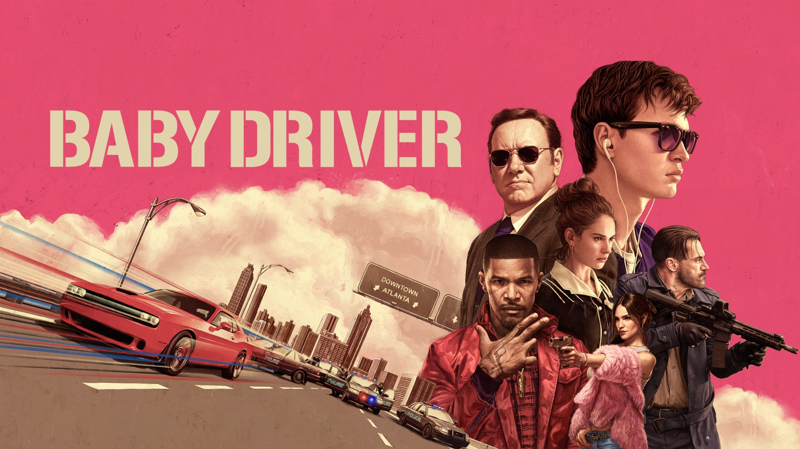

*Baby Driver* follows Baby, a talented getaway driver with a passion for music, who works for a crime boss named Doc to pay off a debt. Baby uses his carefully curated playlists to drown out tinnitus caused by a childhood accident, enhancing his focus and driving skills. When Baby falls for a waitress named Debora, he dreams of leaving his criminal life behind and starting fresh. However, Doc forces him into one last dangerous heist with a reckless crew, leading to chaos and betrayal. Ultimately, Baby risks everything to protect Debora and redeem himself, facing the consequences of his actions in pursuit of freedom and love.
The moment you catch feelings is the moment you catch a bullet.
-Bats
Here it is, Baby. Your killer track.
-Buddy
This is engraved in Hebrew on a guitar I made in Highschool.
Something Like this
הנה זה מותק, מסלול ההרג שלך